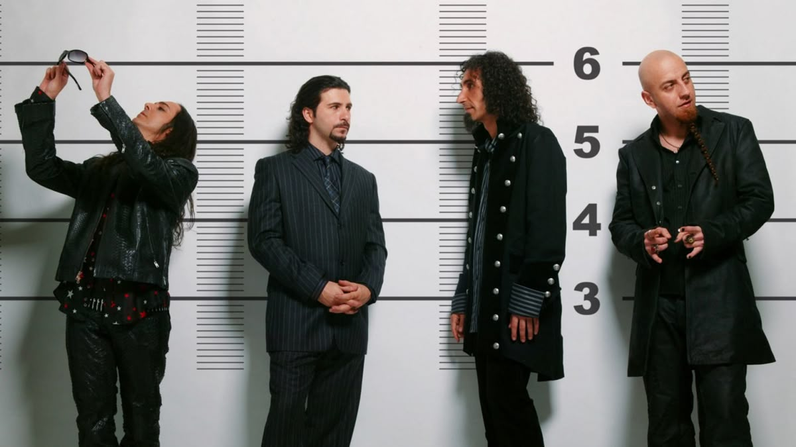
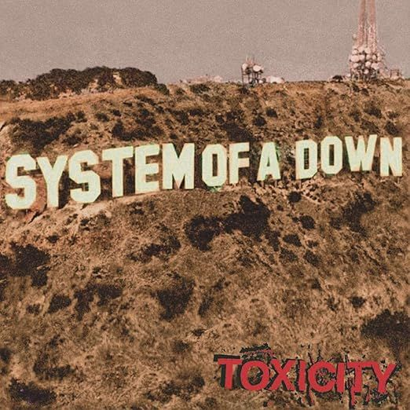
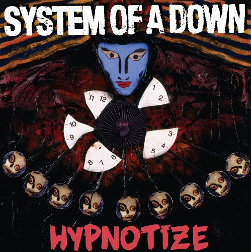
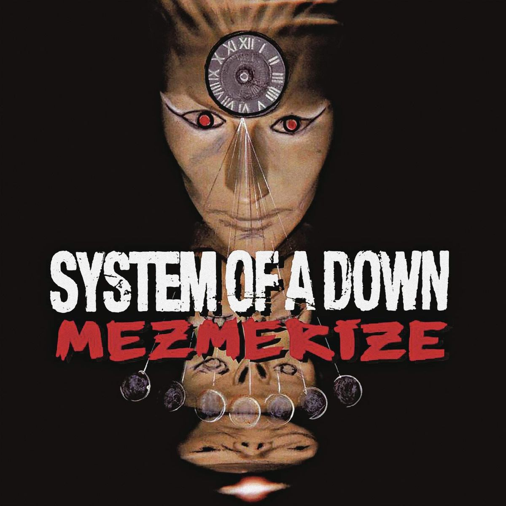
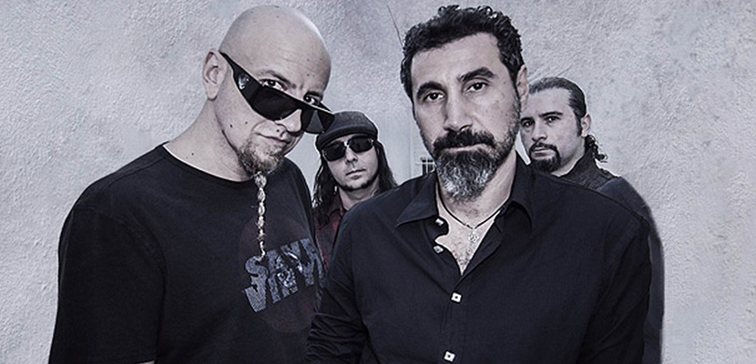

Formação da banda e seus primeiros anos

System of a Down (também conhecida como SOAD ou simplesmente System) é uma banda de metal alternativo armênio-americana formada em Glendale, Califórnia, em 1994. Desde 1997, a banda é composta pelo vocalista principal Serj Tankian, o guitarrista solo e vocalista Daron Malakian, o baixista Shavo Odadjian e o baterista John Dolmayan, que substituiu o baterista original Andy Khachaturian.
Todos os membros do System of a Down têm ascendência armênia, sendo nascidos de imigrantes armênios ou sendo eles mesmos os imigrantes. As origens da banda remontam a 1993, quando Tankian e Malakian tocaram juntos na banda Soil; após o fim daquele projeto, eles uniram forças com Odadjian e Khachaturian para formar o SOAD, adotando o nome de um poema escrito por Malakian.
A Explosão Comercial e o Fenômeno Toxicity
Nos primeiros anos, o grupo construiu sua reputação no circuito underground de Los Angeles misturando heavy metal com influências da música tradicional armênia e punk rock, o que chamou a atenção do produtor Rick Rubin. Esse apoio resultou no álbum de estreia autointitulado em 1998 e, posteriormente, no estrondoso sucesso global de Toxicity (2001), que estreou no topo da Billboard 200 e transformou faixas como "Chop Suey!" e "Aerials" em hinos do rock mundial.

Ativismo, Álbuns e o hiato.
Paralelamente ao sucesso comercial, a banda consolidou uma forte identidade política, atuando incansavelmente como porta-voz do reconhecimento histórico do Genocídio Armênio. Em 2005, lançaram o ambicioso projeto duplo Mezmerize e Hypnotize, com ambos os álbuns estreando no primeiro lugar das paradas e rendendo à música "B.Y.O.B." o prêmio Grammy de Melhor Performance de Hard Rock em 2006.


O retorno aos palcos
Apesar do enorme sucesso, o desgaste de turnês intensas e divergências criativas levaram a banda a um hiato em 2006. O grupo retornou aos palcos em 2011 para turnês mundiais aclamadas, mas impasses internos impediram a gravação de novos álbuns completos. Quebrando um jejum de 15 anos sem material inédito, lançaram em 2020 os singles beneficentes "Protect the Land" e "Genocidal Humanoidz" para apoiar vítimas de conflitos em Artsakh.
Até o momento, o System of a Down vendeu mais de 12 milhões de discos em todo o mundo, teve três álbuns no topo da Billboard 200 e continua na ativa apenas para apresentações e festivais pontuais, mantendo o status de uma das bandas mais influentes e respeitadas da história do metal alternativo.
